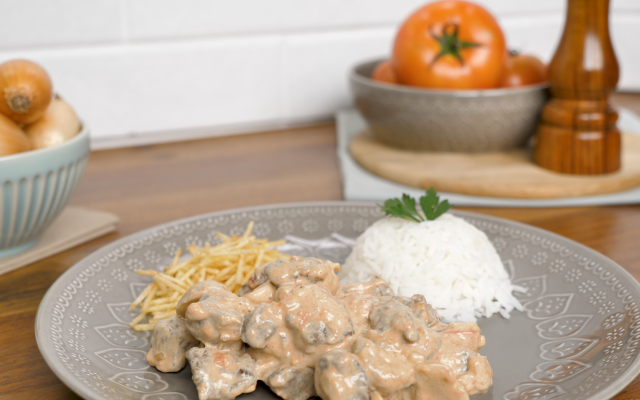

Strogonoff de Carne

Descrição
Aquela receita simples e fácil, que todo mundo já tentou fazer na cozinha: o strogonoff de carne é pedida certa para a hora do almoço ou da janta
Muito cremosa e cheia de sabor, essa receita vai deixar todo mundo querendo mais! Confira com a gente os ingredientes necessários e o passo a passo!
Ingredientes
- 1 kg de carne de sua preferência, como patinho ou coxão mole
- 3 cebolas médias
- 1 vidro de champignon ou palmito
- 2 latas de creme de leite
- 3 tomates picados sem pele e sem sementes
- 3 colheres (sopa) de óleo de oliva
- 2 colheres (sopa) de ketchup
- 1 cubo de caldo de carne dissolvido em 100 ml de água
- Pimenta-do-reino a gosto
- Sal a gosto
Passo a Passo
- Em uma panela, adicione o óleo, a carne, a cebola, os tomates, o caldo de carne e deixe cozinhar por 20 minutos.
- Acrescente o ketchup e o champignon e deixe cozinhar até obter um molho consistente e cremoso.
- Desligue o fogo e acrescente o creme de leite sem soro.
- Mexa até incorporar o molho ao creme.
- Coloque em uma forma refratária e decore com tempero e batata palha.